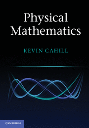

Errata
Examples
Lectures
Physical Mathematics
Cahill, K., 2013
Physical Mathematics
Cambridge University Press

Physical Mathematics
is for sale at only $68.
Errata for
Physical Mathematics
2014
2013
Errata in and enhancements of the 2014 printing
Chapter 1, section 1.26, equation 1.259
Chapter 1, section 1.29, equation 1.315 (Thanks Stephen Pietromonaco!)
Chapter 1, section 1.31, before equation 1.346
Chapter 1, section 1.31, example 1.47
Chapter 1, section 1.35, equation 1.418 (Thanks Stephen Pietromonaco!)
Chapter 1, section 1.37, Schwarz not Schwartz twice (Thanks Robert Burckel!)
Chapter 1, exercise 1.37
Chapter 2, section 2.5, before equation 2.33 (Thanks to Stephen Pietromonaco!)
Chapter 2, section 2.8, example 2.10, before equation 2.86 (Thanks again to S. P.!)
Chapter 4, section 4.13, before equation 4.127
Chapter 4, exercise 4.22
Chapter 5, section 5.2, equations 5.26-27
Chapter 9, section 9.1, after equation 9.12
Chapter 9, section 9.1, after equation 9.35
Chapter 9, section 9.1, example 9.3 simplified
Chapter 9, section 9.2, after equation 9.71
Chapter 11, section 11.7, equation 11.37
Chapter 11, section 11.10, after equation 11.71
Chapter 11, section 11.13, after equation 11.114
Chapter 11, section 11.14, equations 11.121-124
Chapter 11, section 11.20, equation 11.162 (Thanks David Amdahl!)
Chapter 11, section 11.25, equations 11.184 and 187
Chapter 11, section 11.26, equation 11.206
Chapter 11, section 11.27, equation 11.215
Chapter 11, section 11.38, new equations 11.328-330
Chapter 13, section 13.12, equation 13.177
Errata in and enhancements of the 2013 printings
Chapter 1, after end of example 1.16
Chapter 1, section 1.12, after equation 1.141 (Thanks to Mark Ruiz of the Central University of Venezuela!)
Chapter 1, section 1.19, above equation 1.174
Chapte
r 1, section 1.26, equation 1.259
Chapter 1, section 1.26, example 1.35, equations 1.267-268 (Thanks to Nick Haynes of Duke University!)
Chapter 1, section 1.29, equation 1.315 (Thanks Stephen Pietromonaco!)
Chapter 1, section 1.31, before equation 1.346
Chapter 1, section 1.31, after equation 1.364
Chapter 1, section 1.31, example 1.47
Chapter 1, section 1.35, equation 1.418 (Thanks Stephen Pietromonaco!)
Chapter 1, section 1.37, Schwarz not Schwartz twice (Thanks to Robert Burckel!)
Chapter 1, exercise 1.37
Chapter 2, section 2.5, before equation 2.33 (Thanks to Stephen Pietromonaco!)
Chapter 2, section 2.7, equation 2.57
Chapter 2, section 2.8, example 2.10, before equation 2.86 (Thanks again to S.P.!)
Chapter 2, section 2.13, equation 148
Chapter 3, section 3.1, equations 3.12-3.14
Chapter 3, section 3.5, before equation 3.95, and section 3.6, after equation 3.104 and primes in equations 3.105-111 and after equation 3.113, and section 3.8, equation 3.123
Chapter 4, section 4.5, after equation 4.56 and equations 4.61-62 and 4.65-66 (Thanks to Ming-Tso Wei of Duke!)
Chapter 4, section 4.10, example 4.12, equations 4.99 and 4.101
Chapter 4, section 4.12, equation 4.113 and deletion after equation 4.114
Chapter 4, section 4.13, before equation 4.127
Chapter 4, exercise 4.22
Chapter 5, section 5.2, equations 5.26-27
Chapter 5, section 5.14, example 5.19, last paragraph
Chapter 5, section 5.16, equation 5.184 (Thanks to Nick Haynes!)
Chapter 5, section 5.16, example 5.30 (Thanks to Ming-Tso Wei!)
Chapter 5, section 5.18, example 5.36, after equation 5.233
Chapter 5, section 5.20, line 1
Chapter 5, section 5.21, equation 5.292
Chapter 5, exercise 5.2
Chapter 5, exercises 5.12 and 5.13
Chapter 5, exercise 5.31, equation 5.352 (Thanks to Nick Haynes!)
Chapter 6, section 6.5, example 6.6, equation 6.55, and after equation 6.56, and section 6.6, example 6.7, equation 6.62
Chapter 6, section 6.16, before example 6.23
Chapter 6, section 6.19, equation 6.185 (Thanks to Ming-Tso Wei!) and example 6.29, line3
Chapter 6, section 6.27, equation 6.235
Chapter 6, section 6.33, equation 6.329 (Thanks to James Hendrie!)
Chapter 6, section 6.39, equations 6.413-6.416
Chapter 6, section 6.40, equations 6.428-6.433
Chapter 6, exercises 6.5, 6.16, and 6.17 (Thanks to Ming-Tso Wei!), exercise 6.20 (Thanks to Stephen Pietromonaco!) and example 6.29, first paragraph
Chapter 8, section 8.7, equation 8.55, and section 8.8, equations 8.56 and 8.58
Chapter 8, section 8.12, equation 8.97
Chapter 8, example 8.8, Planck satellite data
Chapter 9, section 9.1, after equation 9.12
Chapter 9, section 9.1, after equation 9.35
Chapter 9, section 9.1, example 9.3 simplified
Chapter 9, section 9.1, equation 9.62
Chapter 9, section 9.2, after equation 9.71
Chapter 9, section 9.4 and exercises 9.4, 9.6, 9.11, 9.18, and 9.23
Chapter 10, section 10.3, equation 10.13, and section 10.4, example 10.8, and section 10.5, fourth paragraph
Chapter 10, section 10.18, equations 10.121-122
Chapter 10, section 10.27, equation 10.184
Chapter 10, section 10.32, equation 10.275
Chapter 10, section 10.34, equation 10.305, and exercises 10.9, 10.22-25, 10.28, 10.32, 10.37-44
Chapter 11, section 11.5, equation 11.23
Chapter 11, section 11.7, equation 11.37
Chapter 11, section 11.10, after equation 11.71
Chapter 11, section 11.13, after equation 11.114
Chapter 11, section 11.14, equations 11.121-124
Chapter 11, section 11.20, equation 11.162 (Thanks to David Amdahl!)
Chapter 11, section 11.25, equations 11.184 and 187
Chapter 11, section 11.26, equation 11.206
Chapter 11, section 11.27, equation 11.215
Chapter 11, section 11.38, new equations 11.328-330
Chapter 11, section 11.41, equation 11.343
Chapter 11, section 11.48 (Planck data)
Chapter 11, section 11.48, equation 11.401
Chapter 11, section 11.48, equation 11.418 and between equations 11.421 and 11.423; section 11.49, equations 11.430-431, examples 11.25 and 11.27-29
Chapter 11, sections 11.50 and 11.51, equation 11.480
Chapter 11, exercises 11.20, 11.25, 11.30, and 11.37-40
Chapter 12, section 12.2, equation 12.21
Chapter 12, section 12.2, equation 12.37
Chapter 12, section 12.3, equation 12.78
Chapter 13, section 13.3, equation 13.53
Chapter 13, section 13.10, equations 13.142-144
Chapter 13, sections 13.12, equations 13.177 and 13.189, and section 13.13, equations 13.194 and 13.205
Chapter 13, section 13.21, equation 13.324
Chapter 13, exercises, 13.14, 13.20, and 13.36-38
Chapter 14, section 14.2, equation 14.3
Chapter 14, section 14.4, primes needed before equation 14.8, equation 14.13, and a less-than sign before equation 14.15
Chapter 14, exercise 14.3
Chapter 16, section 16.3, after equation 16.25
Chapter 16, section 16.5, equation 16.55
Chapter 16, section 16.13, after equation 16.164
Chapter 16, exercises 16.6, 16.11, and 16.21
Chapter 17, section 17.1, equations 17.2, 17.4, and 17.16
Chapter 17, section 17.2, equations 17.35-37
Chapter 17, section 17.3, equations 17.35-36 and 17.49-53
A list of all the errata known as of 19 December 2013